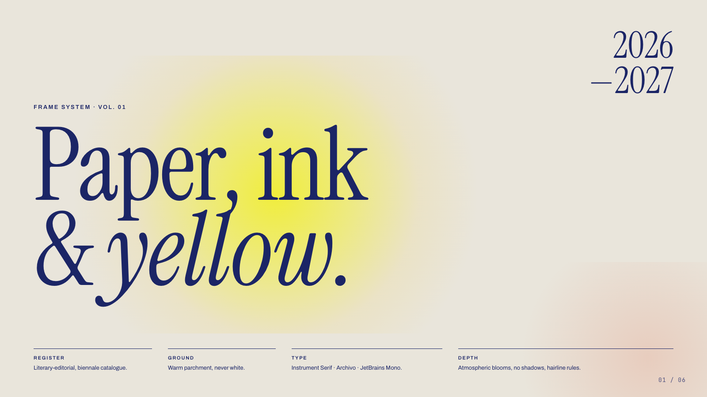
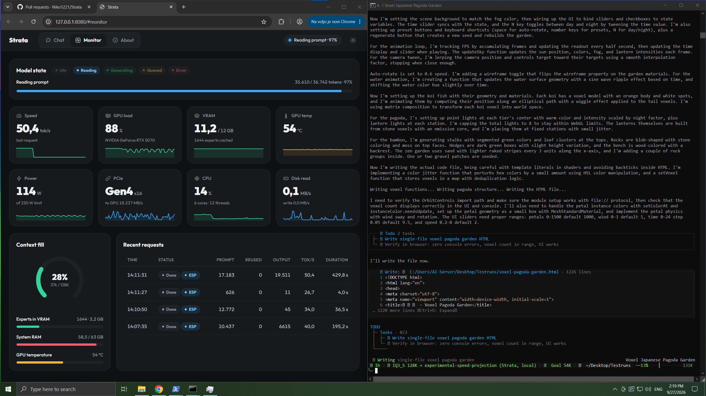
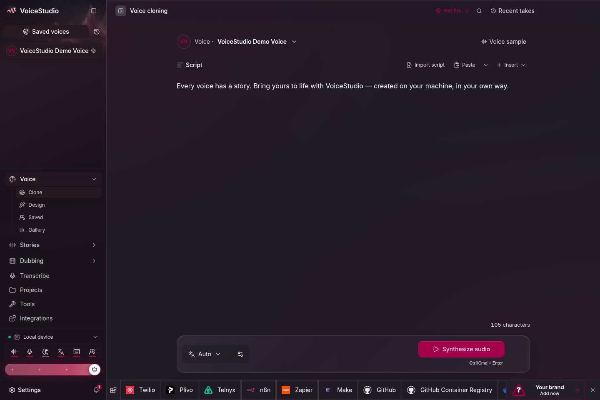

Edition 010 · Week of October 2, 2026
This week's 10
The week your computer became the cloud. Three of this week's ten run entirely on your own machine - voice cloning, a 125-billion-parameter AI, and evidence-based life advice - replacing services that used to need a subscription and someone else's server. The rest arm your AI coding agent with skills, diagrams, safety rails and a video studio.
heygen-com/hyperframesHyperFrames
A video maker for AI: describe what you want, and out comes a polished MP4 - no camera, no editing app.


Niko1221/StrataStrata
Run a powerful AI on your own gaming PC - no cloud, no subscription, no data leaving your machine.

debpalash/VoiceStudioVoiceStudio
A free voice studio on your own computer: clone a voice, dub a video, or dictate in 646 languages - nothing uploaded.
- #4HowToLiveBettereternity4719/HowToLiveBetterA free, evidence-graded cheat sheet for life: 650 recommendations on health, money, law and more, each with its cost and payoff.Use it yourself34.5K stars
- #5PonytailDietrichGebert/ponytailA one-line plugin that makes your AI coding agent write less code - it thinks like the laziest senior developer in the room.Use it yourself151K stars
- #6Archifytt-a1i/archifyPoint an AI agent at your codebase and get a validated architecture diagram - not a guess, a verified map.Use it yourself76K stars
- #7Skillsmattpocock/skillsA curated box of 27 agent skills for Claude Code - from test-driven development to debugging to architecture reviews.Use it yourself274K stars
- #8ECCaffaan-m/ECCA free plugin that turns Claude Code into a full engineering team - 261 skills, 63 sub-agents, 79 commands.Use it yourself271K stars
- #9AI Engineering from Scratchrohitg00/ai-engineering-from-scratchA free 523-lesson curriculum that teaches AI engineering by building real projects - from zero to deploying production systems.For developers62.6K stars
- #10OpenShellNVIDIA/OpenShellA safety sandbox from NVIDIA that keeps AI agents from doing damage - they run inside a locked room with a one-way mirror.For developers14.2K stars
How this week was picked: 226 candidates from 6 sources (GitHub Trending, Trendshift, skills.sh, findarepo, Hacker News, tips). YouTube was not scanned (CAPTCHA in cloud). 14 cleared all floors. Picks: 6 by score, 2 new this week (under 45 days), 1 still climbing (over 90 days), 1 extra by score (only 2 new-this-week candidates available). Every repo passed our safety check on Oct 2. Re-check: ai-memory and DeepSeek-Reasonix now FAIL (new unpatched advisories, added to blocklist and removed from site). KiroCrew moved to REVIEW (advisory reason the routine cannot settle) - removed this week, not blocklisted, flagged for JJ. Tips: none this week (data/tips.md empty).